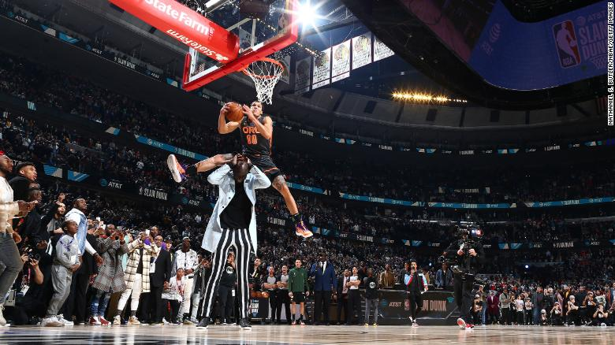
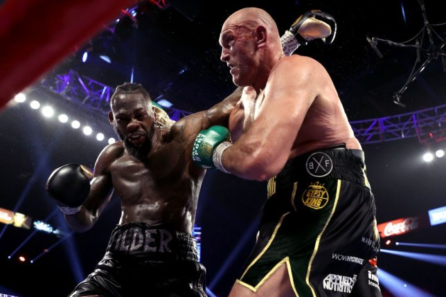
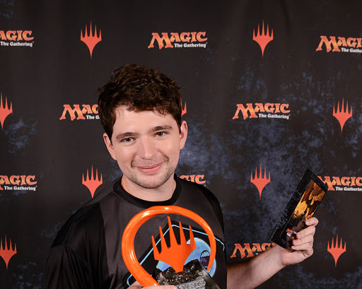

Jogador da NBA Aaron Gordon é roubado novamente no torneio de enterradas onde pulou (com sucesso) sobre Tacko Fall, o jovem pivô de "apenas" 2,26 metros de altura Leia mais
Tyson Fury acaba com a invencibilidade de Deontay Wilder

Tyson Fury é o novo campeão mundial dos pesos pesados, versão Conselho Mundial de Boxe (CMB). O britânico derrotou, na noite de sábado, o norte-americano Deontay Wilder por nocaute técnico no sétimo assalto, no ringue do MGM Hotel, em Las Vegas, nos Estados Unidos.
Leia mais
Brasileiro "PV" conquista Mundial de Magic

"O Magic com certeza mudou todos os aspectos da minha vida. Durante muito tempo foi o meu hobby, depois a minha profissão. Por causa do Magic eu conheci mais ou menos 30 países, aprendi a falar inglês, vivi muitas experiências diferentes e principalmente conheci amigos de todos os lugares que eu provavelmente vou levar para a vida toda" afirmou PV em entrevista recente ao START.